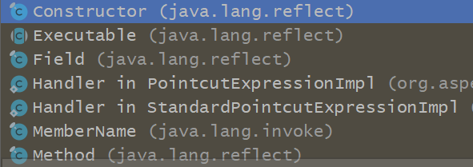

如果想看循环依赖问题，可以直接看第六部分。如有不足或错误，还请指出，感谢。
前面一文搞懂Spring容器初始化机制及流程图 已经讲过Spring容器的初始化流程，都是在refresh方法中的obtainFreshBeanFactory中进行，在该方法中对配置文件中的所有标签/bean标签进行了解析，并封装成BeanDefinition，并对其进行了缓存注册，将beanName和对应的BeanDefinition注册到一个map中，所有的beanName注册到一个List集合中，这些在对bean进行初始化时都需要用到。
那么在装载完BeanDefinition之后还做了什么？当然是进行bean的实例化了，但是从bean的生命周期中我们知道，在实例化前还会做一些其他的操作：
实现BeanFactoryPostProcessor接口的类:该接口是针对beanFactory级别的钩子处理，可以通过beanFactory对象，就可以获取这个对象中注册的所有尚未实例化的 BeanDefinition 对象，管理它们，进行随心所欲的修改属性。
其他还有执行实现了Aware系列接口的类中的方法；
如果实现了BeanPostProcessor，则还会执行该接口下的实例化前置操作方法等，BeanPostProcessor是针对某个bean的，在bean实例化前后提供一个前置和后置的钩子方法
refresh方法如下：
1 2 3 4 5 6 7 8 9 10 11 12 13 14 15 16 17 18 19 20 21 22 23 24 25 26 27 28 29 30 31 32 33 34 35 36 37 38 39 40 41 42 43 44 45 46 47 48 49 50 51 52 53 54 55 56 57 58 59 60 61 62 63 64 @Override public void refresh () throws BeansException, IllegalStateException synchronized (this .startupShutdownMonitor) { prepareRefresh(); ConfigurableListableBeanFactory beanFactory = obtainFreshBeanFactory(); prepareBeanFactory(beanFactory); try { postProcessBeanFactory(beanFactory); invokeBeanFactoryPostProcessors(beanFactory); registerBeanPostProcessors(beanFactory); initMessageSource(); initApplicationEventMulticaster(); onRefresh(); registerListeners(); finishBeanFactoryInitialization(beanFactory); finishRefresh(); } .... } }
以上的几个方法主要讲解 代码X 标注的三个方法：
一、invokeBeanFactoryPostProcessors 该方法主要用于调用BeanDefinitionRegistryPostProcessor 和BeanFactoryPostProcessor两个接口。用于bean工厂级别的钩子方法，是bean工厂的后置处理器，需要先对这两个接口进行实例化，调用其方法。
1 2 3 public interface BeanDefinitionRegistryPostProcessor extends BeanFactoryPostProcessor void postProcessBeanDefinitionRegistry (BeanDefinitionRegistry registry) throws BeansException }
可以看到前者继承自后者，
1 2 3 public interface BeanFactoryPostProcessor void postProcessBeanFactory (ConfigurableListableBeanFactory beanFactory) throws BeansException }
如我们可以实现该接口，在里面注册bean，或其他对BeanDefinition的修改操作：
1 2 3 4 5 6 7 8 @Override public void postProcessBeanDefinitionRegistry (BeanDefinitionRegistry registry) throws BeansException GenericBeanDefinition genericBeanDefinition=new GenericBeanDefinition(); genericBeanDefinition.setBeanClass(BeanClass.class ) ; genericBeanDefinition.getPropertyValues().addPropertyValue("name" ,"wml" ); registry.registerBeanDefinition("MyClass" ,genericBeanDefinition); }
再来看看源码如何调用执行：
1 2 3 4 5 6 7 8 9 10 11 12 13 14 15 16 17 18 19 20 21 22 23 24 25 26 27 28 29 30 31 32 33 34 35 36 37 38 39 40 41 42 43 44 45 46 47 48 49 50 51 52 53 54 55 56 57 58 59 60 61 62 63 64 65 66 67 68 69 public static void invokeBeanFactoryPostProcessors ( ConfigurableListableBeanFactory beanFactory, List<BeanFactoryPostProcessor> beanFactoryPostProcessors) Set<String> processedBeans = new HashSet<>(); if (beanFactory instanceof BeanDefinitionRegistry) { BeanDefinitionRegistry registry = (BeanDefinitionRegistry) beanFactory; List<BeanFactoryPostProcessor> regularPostProcessors = new ArrayList<>(); List<BeanDefinitionRegistryPostProcessor> registryProcessors = new ArrayList<>(); .......... List<BeanDefinitionRegistryPostProcessor> currentRegistryProcessors = new ArrayList<>(); String[] postProcessorNames = beanFactory.getBeanNamesForType(BeanDefinitionRegistryPostProcessor.class , true , false ) ; for (String ppName : postProcessorNames) { if (beanFactory.isTypeMatch(ppName, PriorityOrdered.class )) { currentRegistryProcessors.add(beanFactory.getBean(ppName, BeanDefinitionRegistryPostProcessor.class )) ; processedBeans.add(ppName); } } sortPostProcessors(currentRegistryProcessors, beanFactory); registryProcessors.addAll(currentRegistryProcessors); invokeBeanDefinitionRegistryPostProcessors(currentRegistryProcessors, registry); currentRegistryProcessors.clear(); postProcessorNames = beanFactory.getBeanNamesForType(BeanDefinitionRegistryPostProcessor.class , true , false ) ; for (String ppName : postProcessorNames) { if (!processedBeans.contains(ppName) && beanFactory.isTypeMatch(ppName, Ordered.class )) { currentRegistryProcessors.add(beanFactory.getBean(ppName, BeanDefinitionRegistryPostProcessor.class )) ; processedBeans.add(ppName); } } sortPostProcessors(currentRegistryProcessors, beanFactory); registryProcessors.addAll(currentRegistryProcessors); invokeBeanDefinitionRegistryPostProcessors(currentRegistryProcessors, registry); currentRegistryProcessors.clear(); ..........如果没实现排序接口，就再进行处理调用............ } else { invokeBeanFactoryPostProcessors(beanFactoryPostProcessors, beanFactory); } beanFactory.clearMetadataCache(); }
原理：
获取所有实现BeanDefinitionRegistryPostProcessor接口的beanName
实例化后按照是否实现PriorityOrdered、Ordered接口和没实现排序接口，分别调用执行接口中的方法
按同样方式执行其父接口BeanFactoryPostProcessor接口下的方法。
二、registerBeanPostProcessors 该方法把实现了BeanPostProcessor接口的类实例化，然后加入到BeanFactory中，中间也会根据实现了PriorityOrdered还是Ordered排序接口还是没有实现排序接口，按顺序排序注册，注册就是添加到List<BeanPostProcessor> beanPostProcessors中。
代码跟上面差不多，没什么看的。
接下来就是开始对bean进行实例化了，最重要的部分
三、finishBeanFactoryInitialization 该方法就是进行实例化。内部主要进行了bean实例化、依赖注入，还有对相关注解的支持、BeanPostProcessor的循环调用，AOP的入口也在这里。
1 2 3 4 5 6 7 8 9 10 11 12 13 14 15 16 protected void finishBeanFactoryInitialization (ConfigurableListableBeanFactory beanFactory) if (beanFactory.containsBean(CONVERSION_SERVICE_BEAN_NAME) && beanFactory.isTypeMatch(CONVERSION_SERVICE_BEAN_NAME, ConversionService.class )) { beanFactory.setConversionService( beanFactory.getBean(CONVERSION_SERVICE_BEAN_NAME, ConversionService.class )) ; } ....... beanFactory.preInstantiateSingletons(); }
3.1 具体进行实例化 1 2 3 4 5 6 7 8 9 10 11 12 13 14 15 16 17 18 19 20 21 22 23 24 25 26 27 28 29 30 31 32 33 34 35 36 37 38 39 40 41 42 43 44 45 46 47 48 49 50 51 52 53 54 55 56 57 58 59 60 61 62 63 64 public void preInstantiateSingletons () throws BeansException List<String> beanNames = new ArrayList<>(this .beanDefinitionNames); for (String beanName : beanNames) { RootBeanDefinition bd = getMergedLocalBeanDefinition(beanName); if (!bd.isAbstract() && bd.isSingleton() && !bd.isLazyInit()) { if (isFactoryBean(beanName)) { Object bean = getBean(FACTORY_BEAN_PREFIX + beanName); if (bean instanceof FactoryBean) { final FactoryBean<?> factory = (FactoryBean<?>) bean; boolean isEagerInit; if (System.getSecurityManager() != null && factory instanceof SmartFactoryBean) { isEagerInit = AccessController.doPrivileged((PrivilegedAction<Boolean>) ((SmartFactoryBean<?>) factory)::isEagerInit, getAccessControlContext()); } else { isEagerInit = (factory instanceof SmartFactoryBean && ((SmartFactoryBean<?>) factory).isEagerInit()); } if (isEagerInit) { getBean(beanName); } } } else { getBean(beanName); } } } for (String beanName : beanNames) { Object singletonInstance = getSingleton(beanName); if (singletonInstance instanceof SmartInitializingSingleton) { final SmartInitializingSingleton smartSingleton = (SmartInitializingSingleton) singletonInstance; if (System.getSecurityManager() != null ) { AccessController.doPrivileged((PrivilegedAction<Object>) () -> { smartSingleton.afterSingletonsInstantiated(); return null ; }, getAccessControlContext()); } else { smartSingleton.afterSingletonsInstantiated(); } } } }
获取注册在缓存中的BeanName
遍历BeanName获取BeanDefinition，如果有parent属性，就将其parent标签属性和当前BeanDefinition合并
对非抽象的、单例的、非懒加载的BeanDefinition进行实例化（如果是懒加载的，会在解析自定义标签时将懒加载属性设置到BeanDefinition中，这里就可以进行判断）
走getBean(beanName)进行实例化
getBean内部会调用doGetBean
3.2 doGetBean 1 2 3 4 5 6 7 8 9 10 11 12 13 14 15 16 17 18 19 20 21 22 23 24 25 26 27 28 29 30 31 32 33 34 35 36 37 38 39 40 41 42 43 44 45 46 47 48 49 50 51 52 53 54 55 56 57 58 59 60 61 62 63 64 65 66 67 68 69 70 71 72 73 74 75 76 77 78 79 80 81 82 83 84 85 86 87 88 89 90 91 92 93 94 95 96 97 98 99 100 101 102 103 104 105 106 107 108 109 110 111 112 113 114 115 116 117 118 119 120 121 122 123 124 125 126 127 128 129 130 131 132 133 134 135 136 137 138 139 140 141 142 143 144 145 146 147 148 149 150 protected <T> T doGetBean (final String name, @Nullable final Class<T> requiredType, @Nullable final Object[] args, boolean typeCheckOnly) throws BeansException final String beanName = transformedBeanName(name); Object bean; Object sharedInstance = getSingleton(beanName); if (sharedInstance != null && args == null ) { ........logger...... bean = getObjectForBeanInstance(sharedInstance, name, beanName, null ); } else { if (isPrototypeCurrentlyInCreation(beanName)) { throw new BeanCurrentlyInCreationException(beanName); } BeanFactory parentBeanFactory = getParentBeanFactory(); if (parentBeanFactory != null && !containsBeanDefinition(beanName)) { String nameToLookup = originalBeanName(name); if (parentBeanFactory instanceof AbstractBeanFactory) { return ((AbstractBeanFactory) parentBeanFactory).doGetBean( nameToLookup, requiredType, args, typeCheckOnly); } else if (args != null ) { return (T) parentBeanFactory.getBean(nameToLookup, args); } else if (requiredType != null ) { return parentBeanFactory.getBean(nameToLookup, requiredType); } else { return (T) parentBeanFactory.getBean(nameToLookup); } } if (!typeCheckOnly) { markBeanAsCreated(beanName); } try { final RootBeanDefinition mbd = getMergedLocalBeanDefinition(beanName); checkMergedBeanDefinition(mbd, beanName, args); String[] dependsOn = mbd.getDependsOn(); if (dependsOn != null ) { for (String dep : dependsOn) { if (isDependent(beanName, dep)) { throw new BeanCreationException(mbd.getResourceDescription(), beanName, "Circular depends-on relationship between '" + beanName + "' and '" + dep + "'" ); } registerDependentBean(dep, beanName); try { getBean(dep); } ... } } if (mbd.isSingleton()) { sharedInstance = getSingleton(beanName, () -> { try { return createBean(beanName, mbd, args); } catch (BeansException ex) { destroySingleton(beanName); throw ex; } }); bean = getObjectForBeanInstance(sharedInstance, name, beanName, mbd); } else if (mbd.isPrototype()) { Object prototypeInstance = null ; try { beforePrototypeCreation(beanName); prototypeInstance = createBean(beanName, mbd, args); } finally { afterPrototypeCreation(beanName); } bean = getObjectForBeanInstance(prototypeInstance, name, beanName, mbd); } else { String scopeName = mbd.getScope(); final Scope scope = this .scopes.get(scopeName); if (scope == null ) { throw new IllegalStateException("No Scope registered for scope name '" + scopeName + "'" ); } try { Object scopedInstance = scope.get(beanName, () -> { beforePrototypeCreation(beanName); try { return createBean(beanName, mbd, args); } finally { afterPrototypeCreation(beanName); } }); bean = getObjectForBeanInstance(scopedInstance, name, beanName, mbd); } catch (IllegalStateException ex) { throw new BeanCreationException(beanName, "Scope '" + scopeName + "' is not active for the current thread; consider " + "defining a scoped proxy for this bean if you intend to refer to it from a singleton" , ex); } } } catch (BeansException ex) { cleanupAfterBeanCreationFailure(beanName); throw ex; } } if (requiredType != null && !requiredType.isInstance(bean)) { try { T convertedBean = getTypeConverter().convertIfNecessary(bean, requiredType); if (convertedBean == null ) { throw new BeanNotOfRequiredTypeException(name, requiredType, bean.getClass()); } return convertedBean; } ...... } return (T) bean;
3.2.1 getSingleton从缓存拿实例【解决循环依赖】 可能拿不到实例
1 2 3 4 5 6 7 8 9 10 11 12 13 14 15 16 17 18 19 20 21 22 23 24 25 26 27 protected Object getSingleton (String beanName, boolean allowEarlyReference) Object singletonObject = this .singletonObjects.get(beanName); if (singletonObject == null && isSingletonCurrentlyInCreation(beanName)) { synchronized (this .singletonObjects) { singletonObject = this .earlySingletonObjects.get(beanName); if (singletonObject == null && allowEarlyReference) { ObjectFactory<?> singletonFactory = this .singletonFactories.get(beanName); if (singletonFactory != null ) { singletonObject = singletonFactory.getObject(); this .earlySingletonObjects.put(beanName, singletonObject); this .singletonFactories.remove(beanName); } } } } return singletonObject; }
如果从缓存中没有拿到实例，就会根据bean的scope分别进行实例化，【scope默认是单例的】 FactoryBean接口中定义了scope的默认值：使用的是默认方法，因此也只有在高版本1.8以后才会有。
1 2 3 4 default boolean isSingleton () return true ; } `
3.2.2 单例实例化 3.2.2.1 getSingleton 1 2 3 4 5 6 7 8 9 10 11 12 13 14 15 16 17 18 19 20 21 22 23 24 25 26 27 28 29 30 31 32 33 34 35 36 37 38 39 40 41 42 43 44 45 public Object getSingleton (String beanName, ObjectFactory<?> singletonFactory) synchronized (this .singletonObjects) { Object singletonObject = this .singletonObjects.get(beanName); if (singletonObject == null ) { if (this .singletonsCurrentlyInDestruction) { .....如果正在销毁就抛出异常.... } beforeSingletonCreation(beanName); boolean newSingleton = false ; boolean recordSuppressedExceptions = (this .suppressedExceptions == null ); if (recordSuppressedExceptions) { this .suppressedExceptions = new LinkedHashSet<>(); } try { singletonObject = singletonFactory.getObject(); newSingleton = true ; } catch (IllegalStateException ex) { singletonObject = this .singletonObjects.get(beanName); if (singletonObject == null ) { throw ex; } } .......catch ..... finally { if (recordSuppressedExceptions) { this .suppressedExceptions = null ; } afterSingletonCreation(beanName); } if (newSingleton) { addSingleton(beanName, singletonObject); } } return singletonObject; } }
代码2：singletonFactory.getObject()
这里singletonFactory 是ObjectFactory接口对象，该接口是一个函数式接口，其是在调用getSingleton方法时的lambada表达式中实现（3.2中的代码2部分），调用了createBean方法
A.createBean 1 2 3 4 5 6 7 8 9 10 11 12 13 14 15 16 17 18 19 20 21 22 23 24 25 26 27 28 29 30 31 protected Object createBean (String beanName, RootBeanDefinition mbd, @Nullable Object[] args) throws BeanCreationException { .................. RootBeanDefinition mbdToUse = mbd; Class<?> resolvedClass = resolveBeanClass(mbd, beanName); .... try { mbdToUse.prepareMethodOverrides(); } ... try { Object bean = resolveBeforeInstantiation(beanName, mbdToUse); if (bean != null ) { return bean; } } try { Object beanInstance = doCreateBean(beanName, mbdToUse, args); return beanInstance; } .... }
B. doCreateBean 1 2 3 4 5 6 7 8 9 10 11 12 13 14 15 16 17 18 19 20 21 22 23 24 25 26 27 28 29 30 31 32 33 34 35 36 37 38 39 40 41 42 43 44 45 46 47 48 49 50 51 52 53 54 55 56 57 58 59 60 61 62 63 64 65 66 67 68 69 70 71 72 73 74 75 76 77 78 79 80 81 82 83 84 85 86 87 88 89 90 91 protected Object doCreateBean (final String beanName, final RootBeanDefinition mbd, final @Nullable Object[] args) throws BeanCreationException { BeanWrapper instanceWrapper = null ; if (mbd.isSingleton()) { instanceWrapper = this .factoryBeanInstanceCache.remove(beanName); } if (instanceWrapper == null ) { instanceWrapper = createBeanInstance(beanName, mbd, args); } final Object bean = instanceWrapper.getWrappedInstance(); Class<?> beanType = instanceWrapper.getWrappedClass(); if (beanType != NullBean.class ) { mbd.resolvedTargetType = beanType; } synchronized (mbd.postProcessingLock) { if (!mbd.postProcessed) { try { applyMergedBeanDefinitionPostProcessors(mbd, beanType, beanName); } catch (Throwable ex) { throw new BeanCreationException(mbd.getResourceDescription(), beanName, "Post-processing of merged bean definition failed" , ex); } mbd.postProcessed = true ; } } boolean earlySingletonExposure = (mbd.isSingleton() && this .allowCircularReferences && isSingletonCurrentlyInCreation(beanName)); if (earlySingletonExposure) { if (logger.isTraceEnabled()) { logger.trace("Eagerly caching bean '" + beanName + "' to allow for resolving potential circular references" ); } addSingletonFactory(beanName, () -> getEarlyBeanReference(beanName, mbd, bean)); } Object exposedObject = bean; try { populateBean(beanName, mbd, instanceWrapper); exposedObject = initializeBean(beanName, exposedObject, mbd); } ...... if (earlySingletonExposure) { Object earlySingletonReference = getSingleton(beanName, false ); if (earlySingletonReference != null ) { if (exposedObject == bean) { exposedObject = earlySingletonReference; } else if (!this .allowRawInjectionDespiteWrapping && hasDependentBean(beanName)) { String[] dependentBeans = getDependentBeans(beanName); Set<String> actualDependentBeans = new LinkedHashSet<>(dependentBeans.length); for (String dependentBean : dependentBeans) { if (!removeSingletonIfCreatedForTypeCheckOnly(dependentBean)) { actualDependentBeans.add(dependentBean); } } ..... } } } try { registerDisposableBeanIfNecessary(beanName, bean, mbd); } ..... return exposedObject; }
B1. createBeanInstance 创建Bean的核心方法
1 2 3 4 5 6 7 8 9 10 11 12 13 14 15 16 17 18 19 20 21 22 23 24 25 26 27 28 29 30 31 32 33 34 35 36 37 38 39 40 41 42 43 44 45 46 47 48 49 50 51 52 53 54 55 56 57 58 protected BeanWrapper createBeanInstance (String beanName, RootBeanDefinition mbd, @Nullable Object[] args) Class<?> beanClass = resolveBeanClass(mbd, beanName); ...... Supplier<?> instanceSupplier = mbd.getInstanceSupplier(); if (instanceSupplier != null ) { return obtainFromSupplier(instanceSupplier, beanName); } if (mbd.getFactoryMethodName() != null ) { return instantiateUsingFactoryMethod(beanName, mbd, args); } boolean resolved = false ; boolean autowireNecessary = false ; if (args == null ) { synchronized (mbd.constructorArgumentLock) { if (mbd.resolvedConstructorOrFactoryMethod != null ) { resolved = true ; autowireNecessary = mbd.constructorArgumentsResolved; } } } if (resolved) { if (autowireNecessary) { return autowireConstructor(beanName, mbd, null , null ); } else { return instantiateBean(beanName, mbd); } } Constructor<?>[] ctors = determineConstructorsFromBeanPostProcessors(beanClass, beanName); if (ctors != null || mbd.getResolvedAutowireMode() == AUTOWIRE_CONSTRUCTOR || mbd.hasConstructorArgumentValues() || !ObjectUtils.isEmpty(args)) { return autowireConstructor(beanName, mbd, ctors, args); } ctors = mbd.getPreferredConstructors(); if (ctors != null ) { return autowireConstructor(beanName, mbd, ctors, null ); } return instantiateBean(beanName, mbd); }
B1.1 获取所有有Autowired注解的构造器 determineConstructorsFromBeanPostProcessors :
获取了所有有@Autowired注解的构造器
1 2 3 4 5 6 7 8 9 10 11 12 13 14 15 16 17 18 19 @Nullable protected Constructor<?>[] determineConstructorsFromBeanPostProcessors(@Nullable Class<?> beanClass, String beanName) throws BeansException { if (beanClass != null && hasInstantiationAwareBeanPostProcessors()) { for (BeanPostProcessor bp : getBeanPostProcessors()) { if (bp instanceof SmartInstantiationAwareBeanPostProcessor) { SmartInstantiationAwareBeanPostProcessor ibp = (SmartInstantiationAwareBeanPostProcessor) bp; Constructor<?>[] ctors = ibp.determineCandidateConstructors(beanClass, beanName); if (ctors != null ) { return ctors; } } } } return null ; }
AutowiredAnnotationBeanPostProcessor#determineCandidateConstructors
该方法用于处理有Autowired以及Value注解的构造
1 2 3 4 5 6 7 8 9 10 11 12 13 14 15 16 17 18 19 20 21 22 23 24 25 26 27 28 29 30 31 32 33 34 35 36 37 38 39 40 41 42 43 44 45 46 47 48 49 50 51 52 53 54 55 56 57 58 59 60 61 62 63 64 65 66 67 68 69 70 71 72 73 74 75 76 77 78 79 80 81 82 83 84 85 86 87 88 89 90 91 92 93 94 95 96 97 98 99 100 101 102 103 104 105 106 107 108 109 110 111 112 113 114 115 public Constructor<?>[] determineCandidateConstructors(Class<?> beanClass, final String beanName) throws BeanCreationException { if (!this .lookupMethodsChecked.contains(beanName)) { try { ReflectionUtils.doWithMethods(beanClass, method -> { Lookup lookup = method.getAnnotation(Lookup.class ) ; if (lookup != null ) { Assert.state(this .beanFactory != null , "No BeanFactory available" ); LookupOverride override = new LookupOverride(method, lookup.value()); try { RootBeanDefinition mbd = (RootBeanDefinition) this .beanFactory.getMergedBeanDefinition(beanName); mbd.getMethodOverrides().addOverride(override); } ..... } }); } catch (IllegalStateException ex) { throw new BeanCreationException(beanName, "Lookup method resolution failed" , ex); } this .lookupMethodsChecked.add(beanName); } Constructor<?>[] candidateConstructors = this .candidateConstructorsCache.get(beanClass); if (candidateConstructors == null ) { synchronized (this .candidateConstructorsCache) { candidateConstructors = this .candidateConstructorsCache.get(beanClass); if (candidateConstructors == null ) { Constructor<?>[] rawCandidates; try { rawCandidates = beanClass.getDeclaredConstructors(); } catch (Throwable ex) { throw new BeanCreationException(beanName,xxx) } List<Constructor<?>> candidates = new ArrayList<>(rawCandidates.length); Constructor<?> requiredConstructor = null ; Constructor<?> defaultConstructor = null ; Constructor<?> primaryConstructor = BeanUtils.findPrimaryConstructor(beanClass); int nonSyntheticConstructors = 0 ; for (Constructor<?> candidate : rawCandidates) { if (!candidate.isSynthetic()) { nonSyntheticConstructors++; } else if (primaryConstructor != null ) { continue ; } AnnotationAttributes ann = findAutowiredAnnotation(candidate); if (ann == null ) { ...... } if (ann != null ) { ... boolean required = determineRequiredStatus(ann); if (required) { if (!candidates.isEmpty()) { throw new BeanCreationException(beanName, "Invalid autowire-marked constructors: " + candidates + ". Found constructor with 'required' Autowired annotation: " + candidate); } requiredConstructor = candidate; } candidates.add(candidate); } else if (candidate.getParameterCount() == 0 ) { defaultConstructor = candidate; } } if (!candidates.isEmpty()) { if (requiredConstructor == null ) { if (defaultConstructor != null ) { candidates.add(defaultConstructor); } else if (candidates.size() == 1 && logger.isInfoEnabled()) { logger.info("Inconsistent constructor declaration on bean with name '" + beanName + "': single autowire-marked constructor flagged as optional - " + "this constructor is effectively required since there is no " + "default constructor to fall back to: " + candidates.get(0 )); } } candidateConstructors = candidates.toArray(new Constructor<?>[0 ]); } else if (rawCandidates.length == 1 && rawCandidates[0 ].getParameterCount() > 0 ) { candidateConstructors = new Constructor<?>[] {rawCandidates[0 ]}; } else if (nonSyntheticConstructors == 2 && primaryConstructor != null && defaultConstructor != null && !primaryConstructor.equals(defaultConstructor)) { candidateConstructors = new Constructor<?>[] {primaryConstructor, defaultConstructor}; } else if (nonSyntheticConstructors == 1 && primaryConstructor != null ) { candidateConstructors = new Constructor<?>[] {primaryConstructor}; } else { candidateConstructors = new Constructor<?>[0 ]; } this .candidateConstructorsCache.put(beanClass, candidateConstructors); } } } return (candidateConstructors.length > 0 ? candidateConstructors : null ); }
AutowiredAnnotationBeanPostProcessor#findAutowiredAnnotation
该类在构造函数中，就将Autowired和Value注解的类添加到了set集合autowiredAnnotationTypes中
1 2 3 4 5 6 7 8 9 10 11 12 public AutowiredAnnotationBeanPostProcessor () this .autowiredAnnotationTypes.add(Autowired.class ) ; this .autowiredAnnotationTypes.add(Value.class ) ; try { this .autowiredAnnotationTypes.add((Class<? extends Annotation>) ClassUtils.forName("javax.inject.Inject" , AutowiredAnnotationBeanPostProcessor.class .getClassLoader ())) ; logger.trace("JSR-330 'javax.inject.Inject' annotation found and supported for autowiring" ); } catch (ClassNotFoundException ex) { } }
该方法递归获取属性的注解信息，包括父注解。
1 2 3 4 5 6 7 8 9 10 11 12 13 14 15 16 17 18 19 20 21 22 @Nullable private AnnotationAttributes findAutowiredAnnotation (AccessibleObject ao) if (ao.getAnnotations().length > 0 ) { for (Class<? extends Annotation> type : this .autowiredAnnotationTypes) { AnnotationAttributes attributes = AnnotatedElementUtils.getMergedAnnotationAttributes(ao, type); if (attributes != null ) { return attributes; } } } return null ; } public static AnnotationAttributes getMergedAnnotationAttributes ( AnnotatedElement element, Class<? extends Annotation> annotationType) AnnotationAttributes attributes = searchWithGetSemantics(element, annotationType, null , new MergedAnnotationAttributesProcessor()); AnnotationUtils.postProcessAnnotationAttributes(element, attributes, false , false ); return attributes; }
到这代码2就结束了，获取到了所有有@Autowired注解的构造器信息。
接着就会走代码2.1，创建一个ConstructorResolver
B1.2 对有Autowired注解的构造器实例化 1 return autowireConstructor(beanName, mbd, ctors, args);
并调用如下方法：
【关注带注释的】
1 2 3 4 5 6 7 8 9 10 11 12 13 14 15 16 17 18 19 20 21 22 23 24 25 26 27 28 29 30 31 32 33 34 35 36 37 38 39 40 41 42 43 44 45 46 47 48 49 50 51 52 53 54 55 56 57 58 59 60 61 62 63 64 65 66 67 68 69 70 71 72 73 74 75 76 77 78 79 80 81 82 83 84 85 86 87 88 89 90 91 92 93 94 95 96 97 98 99 100 101 102 103 104 105 106 107 108 109 110 111 112 113 114 115 116 117 118 119 120 121 122 123 124 125 126 127 128 129 130 131 132 133 134 135 136 137 138 139 140 141 142 143 144 145 146 147 148 149 150 151 152 153 154 155 156 157 158 159 160 161 162 163 164 165 166 167 168 169 170 171 172 173 174 175 176 177 178 179 180 181 public BeanWrapper autowireConstructor (String beanName, RootBeanDefinition mbd, @Nullable Constructor<?>[] chosenCtors, @Nullable Object[] explicitArgs) BeanWrapperImpl bw = new BeanWrapperImpl(); this .beanFactory.initBeanWrapper(bw); Constructor<?> constructorToUse = null ; ArgumentsHolder argsHolderToUse = null ; Object[] argsToUse = null ; if (explicitArgs != null ) { argsToUse = explicitArgs; } else { Object[] argsToResolve = null ; synchronized (mbd.constructorArgumentLock) { constructorToUse = (Constructor<?>) mbd.resolvedConstructorOrFactoryMethod; if (constructorToUse != null && mbd.constructorArgumentsResolved) { argsToUse = mbd.resolvedConstructorArguments; if (argsToUse == null ) { argsToResolve = mbd.preparedConstructorArguments; } } } if (argsToResolve != null ) { argsToUse = resolvePreparedArguments(beanName, mbd, bw, constructorToUse, argsToResolve, true ); } } if (constructorToUse == null || argsToUse == null ) { Constructor<?>[] candidates = chosenCtors; if (candidates == null ) { Class<?> beanClass = mbd.getBeanClass(); try { candidates = (mbd.isNonPublicAccessAllowed() ? beanClass.getDeclaredConstructors() : beanClass.getConstructors()); } catch (Throwable ex) { throw new BeanCreationException(mbd.getResourceDescription(), beanName, "Resolution of declared constructors on bean Class [" + beanClass.getName() + "] from ClassLoader [" + beanClass.getClassLoader() + "] failed" , ex); } } if (candidates.length == 1 && explicitArgs == null && !mbd.hasConstructorArgumentValues()) { Constructor<?> uniqueCandidate = candidates[0 ]; if (uniqueCandidate.getParameterCount() == 0 ) { synchronized (mbd.constructorArgumentLock) { mbd.resolvedConstructorOrFactoryMethod = uniqueCandidate; mbd.constructorArgumentsResolved = true ; mbd.resolvedConstructorArguments = EMPTY_ARGS; } bw.setBeanInstance(instantiate(beanName, mbd, uniqueCandidate, EMPTY_ARGS)); return bw; } } boolean autowiring = (chosenCtors != null || mbd.getResolvedAutowireMode() == AutowireCapableBeanFactory.AUTOWIRE_CONSTRUCTOR); ConstructorArgumentValues resolvedValues = null ; int minNrOfArgs; if (explicitArgs != null ) { minNrOfArgs = explicitArgs.length; } else { ConstructorArgumentValues cargs = mbd.getConstructorArgumentValues(); resolvedValues = new ConstructorArgumentValues(); minNrOfArgs = resolveConstructorArguments(beanName, mbd, bw, cargs, resolvedValues); } AutowireUtils.sortConstructors(candidates); int minTypeDiffWeight = Integer.MAX_VALUE; Set<Constructor<?>> ambiguousConstructors = null ; LinkedList<UnsatisfiedDependencyException> causes = null ; for (Constructor<?> candidate : candidates) { Class<?>[] paramTypes = candidate.getParameterTypes(); if (constructorToUse != null && argsToUse != null && argsToUse.length > paramTypes.length) { break ; } if (paramTypes.length < minNrOfArgs) { continue ; } ArgumentsHolder argsHolder; if (resolvedValues != null ) { try { String[] paramNames = ConstructorPropertiesChecker.evaluate(candidate, paramTypes.length); if (paramNames == null ) { ParameterNameDiscoverer pnd = this .beanFactory.getParameterNameDiscoverer(); if (pnd != null ) { paramNames = pnd.getParameterNames(candidate); } } argsHolder = createArgumentArray(beanName, mbd, resolvedValues, bw, paramTypes, paramNames, getUserDeclaredConstructor(candidate), autowiring, candidates.length == 1 ); } catch (UnsatisfiedDependencyException ex) { if (logger.isTraceEnabled()) { logger.trace("Ignoring constructor [" + candidate + "] of bean '" + beanName + "': " + ex); } if (causes == null ) { causes = new LinkedList<>(); } causes.add(ex); continue ; } } else { if (paramTypes.length != explicitArgs.length) { continue ; } argsHolder = new ArgumentsHolder(explicitArgs); } int typeDiffWeight = (mbd.isLenientConstructorResolution() ? argsHolder.getTypeDifferenceWeight(paramTypes) : argsHolder.getAssignabilityWeight(paramTypes)); if (typeDiffWeight < minTypeDiffWeight) { constructorToUse = candidate; argsHolderToUse = argsHolder; argsToUse = argsHolder.arguments; minTypeDiffWeight = typeDiffWeight; ambiguousConstructors = null ; } else if (constructorToUse != null && typeDiffWeight == minTypeDiffWeight) { if (ambiguousConstructors == null ) { ambiguousConstructors = new LinkedHashSet<>(); ambiguousConstructors.add(constructorToUse); } ambiguousConstructors.add(candidate); } } if (constructorToUse == null ) { if (causes != null ) { UnsatisfiedDependencyException ex = causes.removeLast(); for (Exception cause : causes) { this .beanFactory.onSuppressedException(cause); } throw ex; } throw new BeanCreationException(mbd.getResourceDescription(), beanName, "Could not resolve matching constructor " + "(hint: specify index/type/name arguments for simple parameters to avoid type ambiguities)" ); } else if (ambiguousConstructors != null && !mbd.isLenientConstructorResolution()) { throw new BeanCreationException(mbd.getResourceDescription(), beanName, "Ambiguous constructor matches found in bean '" + beanName + "' " + "(hint: specify index/type/name arguments for simple parameters to avoid type ambiguities): " + ambiguousConstructors); } if (explicitArgs == null && argsHolderToUse != null ) { argsHolderToUse.storeCache(mbd, constructorToUse); } } Assert.state(argsToUse != null , "Unresolved constructor arguments" ); bw.setBeanInstance(instantiate(beanName, mbd, constructorToUse, argsToUse)); return bw; }
在该方法中会获取到构造函数的参数类型参数名参数值（如果有的话）的信息，然后通过调用instantiate方法借助反射进行实例化，并将实例化信息保存到BeanWrapperImpl中返回，然后就会从B1 createBeanInstance中返回。
需要注意的是，带Autowired注解的构造器，如果参数类型是一个引用类型，则会先对该类进行实例化操作(getBean())
但是我们不常使用这种在构造函数中使用Autowired注解的方式注入，更常用的是如下的方法：
1 2 @Autowired private Student student
因此，会对当前类的默认构造进行实例化，就会先对被注解标注的Student类进行属性注入，因此就要对Student进行实例化，createBeanInstance中创建实例，更多的是调用代码3的return instantiateBean(beanName, mbd);方法对这种情况进行实例化。
B1.3 默认构造的实例化【*】 内部很简单，也是通过反射进行实例化，然后将实例化信息封装到BeanWrapper返回。
1 2 3 4 5 6 7 8 9 10 11 12 13 14 15 16 17 18 19 20 21 protected BeanWrapper instantiateBean (final String beanName, final RootBeanDefinition mbd) try { Object beanInstance; final BeanFactory parent = this ; if (System.getSecurityManager() != null ) { beanInstance = AccessController.doPrivileged((PrivilegedAction<Object>) () -> getInstantiationStrategy().instantiate(mbd, beanName, parent), getAccessControlContext()); } else { beanInstance = getInstantiationStrategy().instantiate(mbd, beanName, parent); } BeanWrapper bw = new BeanWrapperImpl(beanInstance); initBeanWrapper(bw); return bw; } ..... }
到这里创建实例的createBeanInstance就全部执行完毕了。
回到B1，接下来进入代码2：applyMergedBeanDefinitionPostProcessors
B2.applyMergedBeanDefinitionPostProcessors 该方法主要扫描类中的几个注解进行装配，遍历BeanPostProcessor，调用其子类的postProcessMergedBeanDefinition进行封装。
如：
AutowiredAnnotationBeanPostProcessor：
支持@Autowired和@Value注解
CommonAnnotationBeanPostProcessor
支持@PostConstruct，@PreDestroy,@Resource注解，其中前两个用于bean生命周期
1 2 3 4 5 6 7 8 9 protected void applyMergedBeanDefinitionPostProcessors (RootBeanDefinition mbd, Class<?> beanType, String beanName) for (BeanPostProcessor bp : getBeanPostProcessors()) { if (bp instanceof MergedBeanDefinitionPostProcessor) { MergedBeanDefinitionPostProcessor bdp = (MergedBeanDefinitionPostProcessor) bp; bdp.postProcessMergedBeanDefinition(mbd, beanType, beanName); } } }
B2.1 装配@PostConstruct和@PreDestroy` 调用``AutowiredAnnotationBeanPostProcessor#postProcessMergedBeanDefinition`
对有@PostConstruct，@PreDestroy,@Resource三个注解的方法进行装配
1 2 3 4 5 6 7 8 9 @Override public void postProcessMergedBeanDefinition (RootBeanDefinition beanDefinition, Class<?> beanType, String beanName) super .postProcessMergedBeanDefinition(beanDefinition, beanType, beanName); InjectionMetadata metadata = findResourceMetadata(beanName, beanType, null ); metadata.checkConfigMembers(beanDefinition); }
调用父类InitDestroyAnnotationBeanPostProcessor处理@PostConstruct，@PreDestroy：
1 2 3 4 5 6 7 8 9 10 11 12 13 14 15 16 17 18 19 20 21 22 23 24 @Override public void postProcessMergedBeanDefinition (RootBeanDefinition beanDefinition, Class<?> beanType, String beanName) LifecycleMetadata metadata = findLifecycleMetadata(beanType); metadata.checkConfigMembers(beanDefinition); } private LifecycleMetadata findLifecycleMetadata (Class<?> clazz) ................ LifecycleMetadata metadata = this .lifecycleMetadataCache.get(clazz); if (metadata == null ) { synchronized (this .lifecycleMetadataCache) { metadata = this .lifecycleMetadataCache.get(clazz); if (metadata == null ) { metadata = buildLifecycleMetadata(clazz); this .lifecycleMetadataCache.put(clazz, metadata); } return metadata; } } return metadata; }
buildLifecycleMetadata ：
1 2 3 4 5 6 7 8 9 10 11 12 13 14 15 16 17 18 19 20 21 22 23 24 25 26 27 28 29 30 31 32 33 34 35 36 37 38 39 private LifecycleMetadata buildLifecycleMetadata (final Class<?> clazz) List<LifecycleElement> initMethods = new ArrayList<>(); List<LifecycleElement> destroyMethods = new ArrayList<>(); Class<?> targetClass = clazz; do { final List<LifecycleElement> currInitMethods = new ArrayList<>(); final List<LifecycleElement> currDestroyMethods = new ArrayList<>(); ReflectionUtils.doWithLocalMethods(targetClass, method -> { if (this .initAnnotationType != null && method.isAnnotationPresent(this .initAnnotationType)) { LifecycleElement element = new LifecycleElement(method); currInitMethods.add(element); if (logger.isTraceEnabled()) { logger.trace("Found init method on class [" + clazz.getName() + "]: " + method); } } if (this .destroyAnnotationType != null && method.isAnnotationPresent(this .destroyAnnotationType)) { currDestroyMethods.add(new LifecycleElement(method)); if (logger.isTraceEnabled()) { logger.trace("Found destroy method on class [" + clazz.getName() + "]: " + method); } } }); initMethods.addAll(0 , currInitMethods); destroyMethods.addAll(currDestroyMethods); targetClass = targetClass.getSuperclass(); } while (targetClass != null && targetClass != Object.class ) ; return new LifecycleMetadata(clazz, initMethods, destroyMethods); }
该方法很简单，
如果有@PostConstruct和@PreDestroy注解，就将其封装为LifecycleElement
分别添加到initMethods和destroyMethods两个容器
再将这两个容器封装到LifecycleMetadata类中返回
从buildLifecycleMetadata 返回后，将返回的对象metadata注册到缓存中。
接着执行checkConfigMembers方法，就是对刚刚封装的数据进行检查，检查通过后将上面两个集合保存到``InitDestroyAnnotationBeanPostProcessor`中:
1 2 3 4 5 6 7 8 9 10 11 12 13 14 15 16 17 18 19 20 21 22 23 24 25 26 27 28 public void checkConfigMembers (RootBeanDefinition beanDefinition) Set<LifecycleElement> checkedInitMethods = new LinkedHashSet<>(this .initMethods.size()); for (LifecycleElement element : this .initMethods) { String methodIdentifier = element.getIdentifier(); if (!beanDefinition.isExternallyManagedInitMethod(methodIdentifier)) { beanDefinition.registerExternallyManagedInitMethod(methodIdentifier); checkedInitMethods.add(element); if (logger.isTraceEnabled()) { logger.trace("Registered init method on class [" + this .targetClass.getName() + "]: " + element); } } } Set<LifecycleElement> checkedDestroyMethods = new LinkedHashSet<>(this .destroyMethods.size()); for (LifecycleElement element : this .destroyMethods) { String methodIdentifier = element.getIdentifier(); if (!beanDefinition.isExternallyManagedDestroyMethod(methodIdentifier)) { beanDefinition.registerExternallyManagedDestroyMethod(methodIdentifier); checkedDestroyMethods.add(element); } } this .checkedInitMethods = checkedInitMethods; this .checkedDestroyMethods = checkedDestroyMethods; }
同样 ，后面@Resource的装配流程也是如此，扫描所有被该注解标注的字段和方法进行封装、检查最后保存。
对于@Autowired和@Value注解也是一样的道理，会将对应的Field和require属性封装到AutowiredFieldElement，再封装到InjectionMetadata后返回，将其注册到缓存，在后面进行DI的时候用到，再进行检查，然后保存到InjectionMetadata的checkedElements集合中。
这几个注解标注的字段或方法都会封装到某个类中，如LifecycleElement、AutowiredFieldElement（内部封装到InjectedElement），这些类都是要进行依赖注入的，内部都有一个Member属性，该类是方法、字段等类的父类，如下：

整个applyMergedBeanDefinitionPostProcessors方法可以认为是进行依赖注入的前期处理，搜集需要注入的类（或是注解的字段、或是注解的方法、或是有参、或是有参）进行封装保存，在接下来的依赖注入时，会遍历封装好的元信息进行注入。
B3. 依赖注入 在前面已经将需要注入的类保存了起来，接下来就要开始具体的注入过程，在注入前还有个addSingletonFactory方法，这个方法主要和循环依赖有关，后面会单独分析，我们直接看处理依赖注入的populateBean方法，即 B·doCreateBean的代码4部分
1 2 3 4 5 6 7 8 9 10 11 12 13 14 15 16 17 18 19 20 21 22 23 24 25 26 27 28 29 30 31 32 33 34 35 36 37 38 39 40 41 42 43 44 45 46 47 48 49 50 51 52 53 54 55 56 57 58 59 60 61 62 63 64 65 66 67 68 69 70 71 72 protected void populateBean (String beanName, RootBeanDefinition mbd, @Nullable BeanWrapper bw) ...... boolean continueWithPropertyPopulation = true ; if (!mbd.isSynthetic() && hasInstantiationAwareBeanPostProcessors()) { for (BeanPostProcessor bp : getBeanPostProcessors()) { if (bp instanceof InstantiationAwareBeanPostProcessor) { InstantiationAwareBeanPostProcessor ibp = (InstantiationAwareBeanPostProcessor) bp; if (!ibp.postProcessAfterInstantiation(bw.getWrappedInstance(), beanName)) { continueWithPropertyPopulation = false ; break ; } } } } if (!continueWithPropertyPopulation) { return ; } PropertyValues pvs = (mbd.hasPropertyValues() ? mbd.getPropertyValues() : null ); if (mbd.getResolvedAutowireMode() == AUTOWIRE_BY_NAME || mbd.getResolvedAutowireMode() == AUTOWIRE_BY_TYPE) { MutablePropertyValues newPvs = new MutablePropertyValues(pvs); if (mbd.getResolvedAutowireMode() == AUTOWIRE_BY_NAME) { autowireByName(beanName, mbd, bw, newPvs); } if (mbd.getResolvedAutowireMode() == AUTOWIRE_BY_TYPE) { autowireByType(beanName, mbd, bw, newPvs); } pvs = newPvs; } boolean hasInstAwareBpps = hasInstantiationAwareBeanPostProcessors(); boolean needsDepCheck = (mbd.getDependencyCheck() != AbstractBeanDefinition.DEPENDENCY_CHECK_NONE); PropertyDescriptor[] filteredPds = null ; if (hasInstAwareBpps) { if (pvs == null ) { pvs = mbd.getPropertyValues(); } for (BeanPostProcessor bp : getBeanPostProcessors()) { if (bp instanceof InstantiationAwareBeanPostProcessor) { InstantiationAwareBeanPostProcessor ibp = (InstantiationAwareBeanPostProcessor) bp; PropertyValues pvsToUse = ibp.postProcessProperties(pvs, bw.getWrappedInstance(), beanName); .......省略老版本的方法...... pvs = pvsToUse; } } } if (needsDepCheck) { if (filteredPds == null ) { filteredPds = filterPropertyDescriptorsForDependencyCheck(bw, mbd.allowCaching); } checkDependencies(beanName, mbd, filteredPds, pvs); } if (pvs != null ) { applyPropertyValues(beanName, mbd, bw, pvs); } }
该方法先判断有没有实现InstantiationAwareBeanPostProcessor接口，且方法返回false，如果是，则不进行依赖注入，直接返回；
再判断是根据类型注入还是根据名称注入；
最终会调用postProcessProperties方法进行解析，该方法实现类有多个，上面进行装配的时候已经提到过了，这里主要看对Autowired的注入过程：
AutowiredAnnotationBeanPostProcessor#postProcessProperties
postProcessProperties 1 2 3 4 5 6 7 8 public PropertyValues postProcessProperties (PropertyValues pvs, Object bean, String beanName) InjectionMetadata metadata = findAutowiringMetadata(beanName, bean.getClass(), pvs); try { metadata.inject(bean, beanName, pvs); } ..... return pvs; }
这里就通过findAutowiringMetadata找到在前面装配时，保存到缓存中的元信息，这里就不用重新扫描封装，直接从缓存取到需要注入的元信息类，执行其inject方法，拿到该元信息中封装的所有需要注入的具体元素injectedElements，执行element的inject方法进行注入：
1 2 3 4 5 6 7 8 9 10 11 public void inject (Object target, @Nullable String beanName, @Nullable PropertyValues pvs) throws Throwable Collection<InjectedElement> checkedElements = this .checkedElements; Collection<InjectedElement> elementsToIterate = (checkedElements != null ? checkedElements : this .injectedElements); if (!elementsToIterate.isEmpty()) { for (InjectedElement element : elementsToIterate) { .... element.inject(target, beanName, pvs); } } }
前面也说了，InjectedElement中的Member字段是字段、方法、构造器等的父类，因此如果是对字段加了注解，就执行子类AutowiredFieldElement的inject方法，同样，如果是在方法上加了注解，就调用AutowiredMethodElement的inject方法，这里以字段为例：
inject 1 2 3 4 5 6 7 8 9 10 11 12 13 14 15 16 17 18 19 20 21 22 23 24 25 26 27 28 29 protected void inject (Object bean, @Nullable String beanName, @Nullable PropertyValues pvs) throws Throwable Field field = (Field) this .member; Object value; if (this .cached) { value = resolvedCachedArgument(beanName, this .cachedFieldValue); } else { DependencyDescriptor desc = new DependencyDescriptor(field, this .required); desc.setContainingClass(bean.getClass()); Set<String> autowiredBeanNames = new LinkedHashSet<>(1 ); Assert.state(beanFactory != null , "No BeanFactory available" ); TypeConverter typeConverter = beanFactory.getTypeConverter(); try { value = beanFactory.resolveDependency(desc, beanName, autowiredBeanNames, typeConverter); } .............. } if (value != null ) { ReflectionUtils.makeAccessible(field); field.set(bean, value); } } }
这部分，主要通过beanFactory.resolveDependency得到依赖的引用对象的value值，会从spring容器中拿到，然后通过反射的方式给Field赋值属性
处理resolveDependency方法是委托在DefaultListableBeanFactory类进行：
1 2 3 4 5 6 7 8 9 10 11 12 13 14 15 16 public Object resolveDependency (DependencyDescriptor descriptor, @Nullable String requestingBeanName, @Nullable Set<String> autowiredBeanNames, @Nullable TypeConverter typeConverter) throws BeansException descriptor.initParameterNameDiscovery(getParameterNameDiscoverer()); ....... else { Object result = getAutowireCandidateResolver().getLazyResolutionProxyIfNecessary( descriptor, requestingBeanName); if (result == null ) { result = doResolveDependency(descriptor, requestingBeanName, autowiredBeanNames, typeConverter); } return result; } }
接着进入doResolveDependency
1 2 3 4 5 6 7 8 9 10 11 12 13 14 15 16 17 18 19 20 21 22 23 24 25 26 27 28 29 30 31 32 33 34 35 36 37 38 39 40 41 42 43 44 45 46 47 48 49 50 51 52 53 54 55 56 57 58 59 60 61 62 63 64 65 66 67 68 69 70 71 72 73 74 75 76 77 78 79 80 81 82 83 84 public Object doResolveDependency (DependencyDescriptor descriptor, @Nullable String beanName, @Nullable Set<String> autowiredBeanNames, @Nullable TypeConverter typeConverter) throws BeansException InjectionPoint previousInjectionPoint = ConstructorResolver.setCurrentInjectionPoint(descriptor); try { Object shortcut = descriptor.resolveShortcut(this ); if (shortcut != null ) { return shortcut; } Class<?> type = descriptor.getDependencyType(); Object value = getAutowireCandidateResolver().getSuggestedValue(descriptor); if (value != null ) { if (value instanceof String) { String strVal = resolveEmbeddedValue((String) value); BeanDefinition bd = (beanName != null && containsBean(beanName) ? getMergedBeanDefinition(beanName) : null ); value = evaluateBeanDefinitionString(strVal, bd); } TypeConverter converter = (typeConverter != null ? typeConverter : getTypeConverter()); return (descriptor.getField() != null ? converter.convertIfNecessary(value, type, descriptor.getField()) : converter.convertIfNecessary(value, type, descriptor.getMethodParameter())); } Object multipleBeans = resolveMultipleBeans(descriptor, beanName, autowiredBeanNames, typeConverter); if (multipleBeans != null ) { return multipleBeans; } Map<String, Object> matchingBeans = findAutowireCandidates(beanName, type, descriptor); if (matchingBeans.isEmpty()) { if (isRequired(descriptor)) { raiseNoMatchingBeanFound(type, descriptor.getResolvableType(), descriptor); } return null ; } String autowiredBeanName; Object instanceCandidate; if (matchingBeans.size() > 1 ) { autowiredBeanName = determineAutowireCandidate(matchingBeans, descriptor); if (autowiredBeanName == null ) { if (isRequired(descriptor) || !indicatesMultipleBeans(type)) { return descriptor.resolveNotUnique(descriptor.getResolvableType(), matchingBeans); } else { return null ; } } instanceCandidate = matchingBeans.get(autowiredBeanName); } else { Map.Entry<String, Object> entry = matchingBeans.entrySet().iterator().next(); autowiredBeanName = entry.getKey(); instanceCandidate = entry.getValue(); } if (autowiredBeanNames != null ) { autowiredBeanNames.add(autowiredBeanName); } if (instanceCandidate instanceof Class) { instanceCandidate = descriptor.resolveCandidate(autowiredBeanName, type, this ); } Object result = instanceCandidate; if (result instanceof NullBean) { if (isRequired(descriptor)) { raiseNoMatchingBeanFound(type, descriptor.getResolvableType(), descriptor); } result = null ; } if (!ClassUtils.isAssignableValue(type, result)) { throw new BeanNotOfRequiredTypeException(autowiredBeanName, type, instanceCandidate.getClass()); } return result; } finally { ConstructorResolver.setCurrentInjectionPoint(previousInjectionPoint); } }
最终会在resolveCandidate中从IOC容器获取到依赖的引用bean的实例，如果是第一次，这里的getBean就会对该bean先进行实例化。
1 2 3 4 5 public Object resolveCandidate (String beanName, Class<?> requiredType, BeanFactory beanFactory) throws BeansException { return beanFactory.getBean(beanName); }
这样，我们就将要注入的Field依赖的引用bean的具体的实例对象拿到了，然后在inject方法中对字段进行属性注入便完成了依赖注入。
1 2 3 ReflectionUtils.makeAccessible(field); field.set(bean, value);
同样的，如果@Autowired用在方法上，也会调用resolveDependency获取依赖的引用参数，从缓存中获取它或进行实例化，然后通过反射执行该方法即完成了依赖注入：
1 2 3 ReflectionUtils.makeAccessible(method); method.invoke(bean, arguments);
而处理@Resource、@PostConstruct、@PreDestroy注解的注入，思想也基本一样，这里就不赘述了，都是获取前面装配好的InjectionMetadata进行inject注入，处理类和方法在CommonAnnotationBeanPostProcessor#postProcessProperties中，有兴趣可以自己看一看。
再回到doCreateBean，接下来会走initializeBean方法，根据bean的生命周期，猜测这里会进行实例化和依赖注入后的后置操作，如调用Aware系列接口的方法、@PostConstruct注解方法的调用等。
B4 initializeBean 1 2 3 4 5 6 7 8 9 10 11 12 13 14 15 16 17 18 19 20 21 22 23 24 25 26 27 28 29 30 31 32 33 34 35 36 37 38 39 protected Object initializeBean (final String beanName, final Object bean, @Nullable RootBeanDefinition mbd) if (System.getSecurityManager() != null ) { AccessController.doPrivileged((PrivilegedAction<Object>) () -> { invokeAwareMethods(beanName, bean); return null ; }, getAccessControlContext()); } else { invokeAwareMethods(beanName, bean); } Object wrappedBean = bean; if (mbd == null || !mbd.isSynthetic()) { wrappedBean = applyBeanPostProcessorsBeforeInitialization(wrappedBean, beanName); } try { invokeInitMethods(beanName, wrappedBean, mbd); } catch (Throwable ex) { throw new BeanCreationException( (mbd != null ? mbd.getResourceDescription() : null ), beanName, "Invocation of init method failed" , ex); } if (mbd == null || !mbd.isSynthetic()) { wrappedBean = applyBeanPostProcessorsAfterInitialization(wrappedBean, beanName); } return wrappedBean; }
看下代码2：
1 2 3 4 5 6 7 8 9 10 11 12 13 14 public Object applyBeanPostProcessorsBeforeInitialization (Object existingBean, String beanName) throws BeansException { Object result = existingBean; for (BeanPostProcessor processor : getBeanPostProcessors()) { Object current = processor.postProcessBeforeInitialization(result, beanName); if (current == null ) { return result; } result = current; } return result; }
先主要看这几个子类的调用：
ApplicationContextAwareProcessor
调用
ApplicationContextAware、ResourceLoaderAware、MessageSourceAware、ApplicationEventPublisherAware、EmbeddedValueResolverAware等Aware接口方法
InitDestroyAnnotationBeanPostProcessor
调用@PostConstruct注解的方法，前面对该注解方法装配时封装成了LifecycleMetadata保存到缓存中，这里直接获取到。
1 2 3 4 5 LifecycleMetadata metadata = findLifecycleMetadata(bean.getClass()); try { metadata.invokeInitMethods(bean, beanName); }
再看代码3:invokeInitMethods
invokeInitMethods
对InitializingBean接口方法afterPropertiesSet和init-method属性方法进行调用
1 2 3 4 5 6 7 8 9 10 11 12 13 14 15 16 17 18 19 20 21 22 23 24 25 26 protected void invokeInitMethods (String beanName, final Object bean, @Nullable RootBeanDefinition mbd) throws Throwable { boolean isInitializingBean = (bean instanceof InitializingBean); if (isInitializingBean && (mbd == null || !mbd.isExternallyManagedInitMethod("afterPropertiesSet" ))) { ... if (System.getSecurityManager() != null ) { ... } else { ((InitializingBean) bean).afterPropertiesSet(); } } if (mbd != null && bean.getClass() != NullBean.class ) { String initMethodName = mbd.getInitMethodName(); if (StringUtils.hasLength(initMethodName) && !(isInitializingBean && "afterPropertiesSet" .equals(initMethodName)) && !mbd.isExternallyManagedInitMethod(initMethodName)) { invokeCustomInitMethod(beanName, bean, mbd); } } }
接着会执行代码6：
该方法会注册disposable bean，在beanRegistry中用map来存储：key为beanName，value为DisposableBeanAdapter。
1 2 3 4 5 6 7 8 9 10 11 12 13 14 15 16 17 18 19 20 21 protected void registerDisposableBeanIfNecessary (String beanName, Object bean, RootBeanDefinition mbd) AccessControlContext acc = (System.getSecurityManager() != null ? getAccessControlContext() : null ); if (!mbd.isPrototype() && requiresDestruction(bean, mbd)) { if (mbd.isSingleton()) { registerDisposableBean(beanName, new DisposableBeanAdapter(bean, beanName, mbd, getBeanPostProcessors(), acc)); } else { Scope scope = this .scopes.get(mbd.getScope()); if (scope == null ) { throw new IllegalStateException("No Scope registered for scope name '" + mbd.getScope() + "'" ); } scope.registerDestructionCallback(beanName, new DisposableBeanAdapter(bean, beanName, mbd, getBeanPostProcessors(), acc)); } } }
到这里BdoCreateBean就全部执行完毕
四、bean的销毁 1 2 3 4 5 6 7 8 9 10 11 12 13 14 15 @Override public void registerShutdownHook () if (this .shutdownHook == null ) { this .shutdownHook = new Thread() { @Override public void run () synchronized (startupShutdownMonitor) { doClose(); } } }; Runtime.getRuntime().addShutdownHook(this .shutdownHook); } }
从AbstractApplicationContext的doClose最终走到下面方法：
1 2 3 4 5 6 7 8 9 10 11 12 13 14 15 16 17 18 19 20 21 22 23 24 25 26 27 28 29 30 31 32 33 34 35 36 37 38 public void destroy () if (!CollectionUtils.isEmpty(this .beanPostProcessors)) { for (DestructionAwareBeanPostProcessor processor : this .beanPostProcessors) { processor.postProcessBeforeDestruction(this .bean, this .beanName); } } if (this .invokeDisposableBean) { if (logger.isTraceEnabled()) { logger.trace("Invoking destroy() on bean with name '" + this .beanName + "'" ); } try { if (System.getSecurityManager() != null ) { AccessController.doPrivileged((PrivilegedExceptionAction<Object>) () -> { ((DisposableBean) this .bean).destroy(); return null ; }, this .acc); } else { ((DisposableBean) this .bean).destroy(); } } .... } if (this .destroyMethod != null ) { invokeCustomDestroyMethod(this .destroyMethod); } else if (this .destroyMethodName != null ) { Method methodToCall = determineDestroyMethod(this .destroyMethodName); if (methodToCall != null ) { invokeCustomDestroyMethod(methodToCall); } } }
好了，到这里，bean的整个实例化流程和生命周期就讲解完毕，下面简单总结下：
五、总结
实例化实际是从doGetBean开始，会==先从一级缓存拿实例==，如果有则返回，如果没有则会先进行循环依赖检查，如果是原型的且有循环依赖，则抛出异常
如果lookup-method，则先对依赖的方法进行实例化
调用createBean进行具体实例化
createBean流程：
如果有factory-method属性，则先对指定的方法进行实例化调用
接着会扫描所有被@Autowired注解标注构造器，如果有父注解，会将父和子合并
然后会将扫描得到的构造器，获取其参数信息（如果有的话），通过反射进行实例化，并将实例化信息封装到BeanWrapperImpl返回；
==一定注意，这里是通过构造器注入的方式，因此如果参数为引用类型，需要先对参数进行实例化，从doGetBean开始**==
如果@Autowired作用在字段上，即会使用该类的默认构造进行实例化，同样将实例信息包装成BeanWrapper返回
==注意：这里就不会像使用构造器注入一样，先对依赖的引用类型bean进行实例化，而是直接进行默认构造实例化，后面对内部依赖bean进行依赖注入时如果其没实例化才会进行实例化==
对@Autowired、@Value、@PostConstruct、@PreDestroy和Resource注解标注的字段或方法进行装配，封装到InjectionMetadata元信息中，并注册到缓存。
==调用addSingletonFactory将beanName和singletonFactory添加到三级缓存==
从缓存获取装配的元信息进行依赖注入，会根据元信息是字段还是方法类型进行不同的子类注入，通过反射设置Field(字段)属性或执行对应的方法。
==注意：如果这些被依赖的属性（元信息）是引用类型，同样也会解析调用getBean对其实例化==
分别调用Aware系列接口的方法、@PostConstruct标注的方法、InitializingBean接口方法afterPropertiesSet和init-method标签指定的方法
最后注册disposable bean到map中，这些方法会在spring关闭容器时调用doClose方法进行遍历，调用对应的销毁方法。
==最后将得到的实例添加到一级缓存中==
到这里会发现涉及到的三级缓存以及循环依赖的问题还没有讲，这部分内容我单独拉了出来进行讲解。
六、循环依赖问题 简单的讲，就是beanA依赖beanB，beanB依赖beanC，beanC又依赖beanA，这样形成了一个环状依赖。
基于上述情形，循环依赖可分为以下几个情况：
如果通过构造器注入的依赖，一定注入失败
如果bean都是多例的，一定注入失败
如果构造器+setter+单例+原型混合方式注入，当且仅当第一个bean为通过setter注入且是单例的情况下才会注入成功。
总体讲就是出现循环依赖时，只有第一个获得的bean是以setter注入依赖的方式且是范围是单例时，才会成功。
为什么循环依赖时，用setter注入的单例bean就可以成功？ 结合前面讲的bean的实例化的流程，一起来分析：
假设我们有这样两个类A和B存在循环依赖：
1 2 3 4 5 6 7 8 9 10 11 12 @Data @Service public class A @Autowired private B b; } @Data @Service public class B @Autowired private A a; }
第一次对A进行实例化注入 首先对A进行实例化，按照实例化流程，进入doGetBean方法，会首先从缓存中拿，此时缓存一定是没有的：
1 2 3 4 5 6 7 8 9 10 11 12 13 14 15 16 17 18 19 20 21 22 23 24 25 26 27 protected Object getSingleton (String beanName, boolean allowEarlyReference) Object singletonObject = this .singletonObjects.get(beanName); if (singletonObject == null && isSingletonCurrentlyInCreation(beanName)) { synchronized (this .singletonObjects) { singletonObject = this .earlySingletonObjects.get(beanName); if (singletonObject == null && allowEarlyReference) { ObjectFactory<?> singletonFactory = this .singletonFactories.get(beanName); if (singletonFactory != null ) { singletonObject = singletonFactory.getObject(); this .earlySingletonObjects.put(beanName, singletonObject); this .singletonFactories.remove(beanName); } } } } return singletonObject; }
这里涉及到三级缓存，使用三个Map进行存储：
1 2 3 4 5 6 7 private final Map<String, Object> singletonObjects = new ConcurrentHashMap<>(256 ); private final Map<String, ObjectFactory<?>> singletonFactories = new HashMap<>(16 ); private final Map<String, Object> earlySingletonObjects = new HashMap<>(16 );
要搞清楚循环依赖的处理，就要先搞清楚bean注册到这几个缓存的时机，按照流程，如果拿不到缓存就会进入doCreateBean方法进行实例化，在实例化前会将当前bean保存在singletonsCurrentlyInCreation中
结合总结中doCreateBean的流程，我们知道spring首先会调用createBeanInstance对构造函数进行实例化，==而如果是setter注入或@Autowired注解标注在字段上，会默认使用无参构造进行实例化，不受到依赖属性的影响实例化成功==
接着会进行装配然后进行依赖注入，而在这两者间还有个操作前面没有提：
1 2 3 4 5 6 7 boolean earlySingletonExposure = (mbd.isSingleton() && this .allowCircularReferences && isSingletonCurrentlyInCreation(beanName)); if (earlySingletonExposure) { addSingletonFactory(beanName, () -> getEarlyBeanReference(beanName, mbd, bean)); }
而==在addSingletonFactory中就会将A的beanName和singletonFactory添加到三级缓存中==
1 2 3 4 5 6 7 8 9 10 protected void addSingletonFactory (String beanName, ObjectFactory<?> singletonFactory) Assert.notNull(singletonFactory, "Singleton factory must not be null" ); synchronized (this .singletonObjects) { if (!this .singletonObjects.containsKey(beanName)) { this .singletonFactories.put(beanName, singletonFactory); this .earlySingletonObjects.remove(beanName); this .registeredSingletons.add(beanName); } } }
singletonFactory是从哪获取的呢？答案是从前面那个lambada表达式getEarlyBeanReference中获取，这里会遍历BeanPostProcessor调用getEarlyBeanReference获取exposedObject，实际其子类都是直接将该bean进行返回。可以看到三级缓存的处理还是很耗时的。【因此getSingleton方法中从三级缓存获取后会将其放入到二级缓存，以提升效率】
1 2 3 4 5 6 7 8 9 10 11 12 protected Object getEarlyBeanReference (String beanName, RootBeanDefinition mbd, Object bean) Object exposedObject = bean; if (!mbd.isSynthetic() && hasInstantiationAwareBeanPostProcessors()) { for (BeanPostProcessor bp : getBeanPostProcessors()) { if (bp instanceof SmartInstantiationAwareBeanPostProcessor) { SmartInstantiationAwareBeanPostProcessor ibp = (SmartInstantiationAwareBeanPostProcessor) bp; exposedObject = ibp.getEarlyBeanReference(exposedObject, beanName); } } } return exposedObject; }
到这里我们知道了注册为三级缓存的时机，接下来先不往下看，先去看什么时候注册到一级缓存中。
根据总结中的分析，在doCreateBean执行完毕后，会拿到具体的实例，然后在下面这个方法中将beanName注册到一级缓存：
1 2 3 4 5 protected void afterSingletonCreation (String beanName) if (!this .inCreationCheckExclusions.contains(beanName) && !this .singletonsCurrentlyInCreation.remove(beanName)) { throw new IllegalStateException("Singleton '" + beanName + "' isn't currently in creation" ); } }
此时三级缓存的时机都搞清楚了，回到doCreateBena，接下来会调用populateBean进行依赖注入，注意，在这里如果有引用类型的依赖，就会先初始化该类，此时我们处理的是类A，走到这里发现有一个引用类型的依赖类B，因此就要对类B先进行实例化，又回到了doGetBean
对依赖的B进行实例化注入 此时又会调用getSingleton尝试从缓存中取实例，而B显然不在缓存中，此时只有三级缓存注册了类A，然后进入doCreateBean中，==将B注册到三级缓存中==
接着进入populateBean，对B进行依赖注入时，发现依赖的引用类型的属性A，此时便出现了循环依赖，就会先对A进行实例化：
第二次对A进行实例化注入 此时对A进行实例化，调用getSingleton尝试从缓存中取实例，==这次便可以直接从缓存中拿到，且从第三级缓存中取到，删除三级缓存中的bean，然后注册到二级缓存中==【看上面的getSingleton方法】，拿到后就直接从doGetBean返回，在B的populateBean方法中完成属性A的依赖注入。
这样对B的实例化会从doCreateBean返回，在afterSingletonCreation中==将B注册到一级缓存==，
接着从A的populateBean方法中完成对B的依赖注入，对A的实例化从doCreateBean返回，并将A注册到一级缓存。
到这里，单例setter注入循环依赖的整个流程就完成了，注入成功。
构造器方式出现循环依赖无法完成注入？ 从上面的分析很容器知道，如果是构造器注入，会在添加三级缓存前的对构造器方式进行实例化，如果构造函数参数存在依赖的属性，就要先对其进行实例化，仍以A和B为例，注入A，发现要先注入B，然后注入B，发现要先注入A，此时因为三级缓存没有A，又会进入对A的实例化，这样就造成了无限循环，造成双方都无法注入，最终抛出org.springframework.beans.factory.BeanCreationException异常。
scope为原型时为什么无法完成注入？ 如果是原型模式，在第一次从缓存没有拿到实例时，会首先走else部分的第一行代码，如下：
该方法会判断原型模式是否存在循环依赖，如果存在，直接抛出异常。
1 2 3 4 5 6 7 8 if (isPrototypeCurrentlyInCreation(beanName)) { throw new BeanCurrentlyInCreationException(beanName); } protected boolean isPrototypeCurrentlyInCreation (String beanName) Object curVal = this .prototypesCurrentlyInCreation.get(); return (curVal != null && (curVal.equals(beanName) || (curVal instanceof Set && ((Set<?>) curVal).contains(beanName)))); }
而prototypesCurrentlyInCreation是在对原型模式bean实例化前将beanName添加到该集合的：
1 2 3 4 5 6 7 protected void beforePrototypeCreation (String beanName) Object curVal = this .prototypesCurrentlyInCreation.get(); if (curVal == null ) { this .prototypesCurrentlyInCreation.set(beanName); } ..... }
因此A->B>A，第二次实例化A时就会走到上面那个位置检测到循环依赖。
原型bean的实例化也是调用doCreateBean方法，原理差不多，有兴趣可以自己看看。
OK，到这里实例化的整个流程和循环依赖就全部走完了。